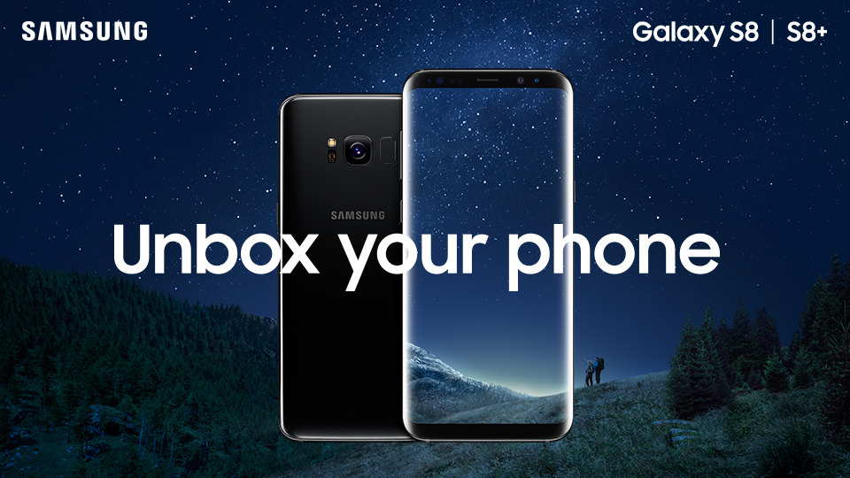

|  | ||
|---|---|---|
| NETWORK | Technology | GSM / HSPA / LTE |
| LAUNCH | Announced | 2017, March |
| Status | Available. Released 2017, April | |
| BODY | Dimensions | 148.9 x 68.1 x 8 mm (5.86 x 2.68 x 0.31 in) |
| Weight | 155 g (5.47 oz) | |
| Build | Front/back glass (Gorilla Glass 5), aluminum frame | |
| SIM | Single SIM (Nano-SIM) or Hybrid Dual SIM (Nano-SIM, dual stand-by) | |
| - Samsung Pay (Visa, MasterCard certified) | ||
| - IP68 certified - dust/water proof (up to 1.5m for 30 mins) | ||
| DISPLAY | Type | Super AMOLED capacitive touchscreen, 16M colors |
| Size | 5.8 inches, 84.8 cm2 (~83.6% screen-to-body ratio) | |
| Resolution | 1440 x 2960 pixels, 18.5:9 ratio (~570 ppi density) | |
| Multitouch | Yes | |
| Protection | Corning Gorilla Glass 5 | |
| - HDR10 compliant | ||
| - 3D Touch (home button only) | ||
| - Always-on display | ||
| PLATFORM | OS | Android 7.0 (Nougat), upgradable to Android 8.0 (Oreo) |
| Chipset | Exynos 8895 Octa - EMEA | |
| Qualcomm MSM8998 Snapdragon 835 - USA & China | ||
| CPU | Octa-core (4x2.3 GHz Mongoose M2 & 4x1.7 GHz Cortex-A53) - EMEA | |
| Octa-core (4x2.35 GHz Kryo & 4x1.9 GHz Kryo) - USA & China | ||
| GPU | Mali-G71 MP20 - EMEA | |
| Adreno 540 - USA & China | ||
| MEMORY | Card slot | microSD, up to 256 GB (uses SIM 2 slot) - dual SIM model only |
| Internal | 64 GB, 4 GB RAM | |
| CAMERA | Primary | 12 MP (f/1.7, 26mm, 1/2.5", 1.4 µm, Dual Pixel PDAF), phase detection autofocus, OIS, LED flash, check quality |
| Features | Geo-tagging, simultaneous 4K video and 9MP image recording, touch focus, ace/smile detection, Auto HDR, panorama | |
| Video | 2160p@30fps, 1080p@60fps, 720p@240fps, HDR, dual-video rec., check quality | |
| Secondary | 8 MP (f/1.7, 25mm, 1/3.6", 1.22 µm), autofocus, 1440p@30fps, dual video call Auto HDR | |
| SOUND | Alert types | Vibration; MP3, WAV ringtones |
| Loudspeaker | Yes | |
| 3.5mm jack | Yes | |
| - 32-bit/384kHz audio | ||
| - Active noise cancellation with dedicated mic | created by fizal fauzi 16.11.0494 | |